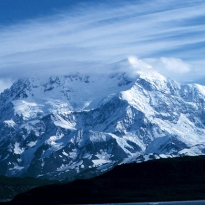

본문콘텐츠영역
ABOUT
Canada, the second largest country in the world in area (after Russia), occupying roughly the northern two-fifths of the continent of North America. Despite Canada's great size, it is one of the world's most sparsely populated countries. This fact, coupled with the grandeur of the landscape, has been central to the sense of Canadian national identity, as expressed by the Dublin-born writer Anna Brownell Jameson, who explored central Ontario in 1837 and remarked exultantly on “the seemingly interminable line of trees before you; the boundless wilderness around you; the mysterious depths amid the multitudinous foliage, where foot of man hath never penetrated…the solitude in which we proceeded mile after mile, no human being, no human dwelling within sight.”
Although Canadians are comparatively few in number, they have crafted what many observers consider to be a model multicultural society, welcoming immigrant populations from every other continent. In addition, Canada harbours and exports a wealth of natural resources and intellectual capital equaled by few other countries.
Canada is officially bilingual in English and French, reflecting the country's history as ground once contested by two of Europe's great powers. The word Canada is derived from the Huron-Iroquois kanata, meaning a village or settlement. In the 16th century, French explorer Jacques Cartier used the name Canada to refer to the area around the settlement that is now Quebec city.
After the British conquest of New France, the name Quebec was sometimes used instead of Canada. The name Canada was fully restored after 1791, when Britain divided old Quebec into the provinces of Upper and Lower Canada (renamed in 1841 Canada West and Canada East, respectively, and collectively called Canada). In 1867 the British North America Act created a confederation from three colonies (Nova Scotia, New Brunswick, and Canada) called the Dominion of Canada. The act also divided the old colony of Canada into the separate provinces of Ontario and Quebec. Dominion status allowed Canada a large measure of self-rule, but matters pertaining to international diplomacy and military alliances were reserved to the British crown. Canada became entirely self-governing within the British Empire in 1931, though full legislative independence was not achieved until 1982, when Canada obtained the right to amend its own constitution.
VISIT
The United Nations Educational, Scientific and Cultural Organization (UNESCO) seeks to build peace through international cooperation in education, the sciences and culture. UNESCO's programs contribute to the achievement of the Susta
UNESCO
The United Nations Educational, Scientific and Cultural Organization (UNESCO) seeks to build peace through international cooperation in education, the sciences and culture.
-
- Rocky Mountain Parks
-
The Canadian Rocky Mountain Parks protect many of the outstanding scenic natural features, landscapes and views for which they are renowned.
-
- Head-Smashed-In Buffalo Jump
-
Head-Smashed-In Buffalo Jump is located in southern Alberta, Canada, where the foothills of the Rocky Mountains meet the Great Plains.
-
- Historic District of Old Québec
-
The Historic District of Old Québec is authentic in terms of its form and design, materials and substance,and location and setting.
-
- Nahanni National Park
-
Located along the South Nahanni River, one of the most spectacular wild rivers in North America, this park contains deep canyons and huge waterfalls, as well as a unique limestone cave system.
-
- Old Town Lunenburg
-
Established in 1753, it has retained its original layout and overall appearance, based on a rectangular grid pattern drawn up in the home country.
-
- Rideau Canal
-
The Rideau Canal is the only canal dating from the great North American canal-building era of the early 19th century to remain operational along its original line with most of its structures intact.
-
- Mistaken Point
-
Mistaken Point is a globally significant Ediacaran fossil site almost entirely located within Mistaken Point Ecological Reserve on the south-eastern tip of the island of Newfoundland in eastern Canada.
-

- Kluane / Tatshenshini-Alsek
-
These parks comprise an impressive complex of glaciers and high peaks on both sides of the border between Canada and the United States.
TO DO
The culture of Canada embodies the artistic, culinary, literary, humour, musical, political and social elements that are representative of Canadians.

- Toronto International Film Festival: TIFF
- The Toronto International Film Festival (TIFF, often stylized as tiff) is one of the most prestigious and largest publicly attended film festivals in the world, founded in 1976 and taking place each September. It is also a permanent destination for film culture operating out of the TIFF Lightbox cultural centre, located in Downtown Toronto.
GALLERY